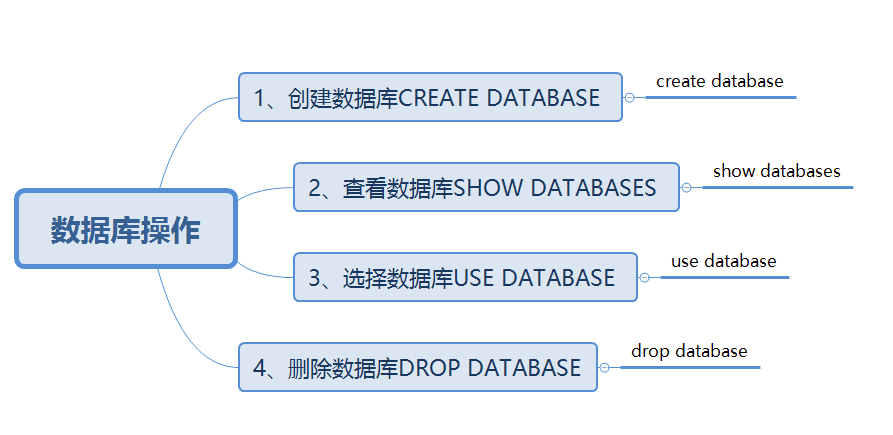
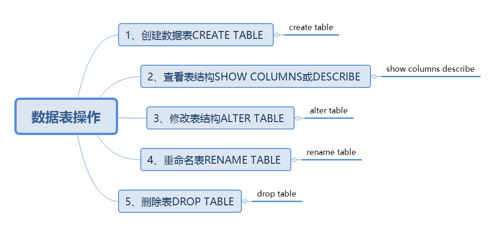

原文连接:https://www.cnblogs.com/dashucoding/p/10733931.html
php与mysql数据库，PHP支持很多数据库，与mysql为牛逼组合，mysql数据库的基础知识的掌握是由必要的，要了解如何操作mysql数据库，数据表的方法。
什么是数据库，数据库能做什么，数据库有什么好处，数据库的基础必备技术，备份和恢复的方法。
mysql的好处，功能强大，支持跨平台，运行速度快，支持面向对象，成本低，支持各种开发语言，数据库存储容量大，支持强大的内置函数。
启动MySQL服务器
net start mysql连接数据库：
mysql –u root –h127.0.0.1 –p password断开MySQL服务器:
quit;停止MySQL服务器:
net stop mysql;
mysqladmin –uroot shutdown –proot数据库的操作：


CREATE [TEMPORARY] TABLE [IF NOT EXISTS] 数据表名
[(create_definition,…)][table_options] [select_statement]temporary 表示创建一个临时表
if not exists 表示表是否已经存在
create_definition 表的一些特性
select_statement 快速创建表col_name type [NOT NULL | NULL] [DEFAULT default_value] [AUTO_INCREMENT]
[PRIMARY KEY ] [reference_definition]
create table table_name (列名1 属性,列名2 属性…);col_name 字段名
type 字段类型
not null | null 指出该列是否允许控制
default 表示默认值
auto_increment 表示是否自动编号
primary key 表示是否为主键
一个表只能有一个主键，如果表中没有主键，mysql会返回第一个没有任何null列的unique键，作为主键。
reference_definition 为字段添加注解create table tb_admin (
id int auto_increment primary key,
user varchar(30) not null,
password varchar(30) not null,
createtime datetime
);查看表结构：
SHOW [FULL] COLUMNS FROM 数据表名 [FROM 数据库名];
DESCRIBE 数据表名;修改表结构:
ALTER[IGNORE] TABLE 数据表名 alter_spec[,alter_spec]… 重命名表:
RENAME TABLE 数据表名1 To 数据表名2 删除表:
DROP TABLE 数据表名;drop table if exists 数据表名;数据库的操作：插入已解决insert，查询select，修改update，删除记录delete。
插入记录insert
insert into 数据表名(column_name,column_name2, … ) values (value1, value2, … )查询数据库：
select selection_llist from 数据表名 where primary_constraint group by grouping_columns order by sorting_columns having secondary_constraint limit count表1.字段=表2.字段 and 其他查询条件
select 字段名 from 表1,表2…… where 表1.字段=表2.字段 and 其他查询条件
update 数据表名set column_name = new_value1,column_name2 = new_value2, …where condition
delete from 数据表名 where condition数据库备份和恢复:
使用MYSQLDUMP命令，进行数据的备份。
mysql -uroot –proot db_database <F:\db_database.txt”php操作数据库
mysql_connect()函数连接mysql服务器
mysql_select_db()函数选择数据库
mysql_query()函数执行sql语句
mysql_fetch_array()函数从数组结果集中获取信息
mysql_fetch_row()函数逐行获取结果集中的每条记录
mysql_num_rows()函数获取查询结果集中的记录数
insert动态添加
select语句查询
update动态修改
delete动态删除MySQL是一款广受欢迎的数据库
开源的半商业软件
市场占有率高
PHP具有强大的数据库支持能力
查询，显示，插入，更新，删除
关闭MySQL服务器
每使用一次mysql_connect()或mysql_query()函数，都会消耗系统资源。
使用mysql_close()函数关闭与MySQL服务器的连接，以节省系统资源。
mysql_close($Link); <?php
$link = mysql_connect("localhost", "root", "root") or die("用户名密码有误！".mysql_error()); //连接Mysql服务器
if($link){
echo "数据源连接成功!";
}
?>
// mysql_connect('hostname','username','password');<?php
$link = mysql_connect("localhost", "root", "root") or die("用户名密码有误！".mysql_error()); //连接Mysql服务器
$db_selected=mysql_select_db("db_database1",$link);
//$db_selected=mysql_query("use db_database1",$link);
if($db_selected){
echo "数据库选择成功!";
}
?>
// mysql_select_db ( string数据库名[,resource link_identifier] )
// mysql_query("use数据库名"[,resource link_identifier]);<?php
$db = array (
'server' => 'localhost',
'port' => '3306',
'username' => 'root',
'password' => 'root',
'database' => 'dashu'
);
$conn = @mysql_connect($db['server'].':'.$db['port'],$db['username'],$db['password']);
if (! $conn) {
echo "服务器不能连！" . mysql_error();
} else {
// 声明字符集
mysql_set_charset('utf8', $conn);
// 选择数据库
mysql_select_db($db['database'], $conn);
}<?php
$link = mysql_connect("localhost", "root", "root") or die("数据库连接失败".mysql_error());
mysql_select_db("db_database",$link);
mysql_query("set names gb2312");
$sql=mysql_query("select * from tb_book");
$info= mysql_fetch_array($sql);
if($_POST[Submit] == "查询"){
$tet_book = $POST[txt_book];
$sql = mysql_query("select * from tb_book where bookname like '%".trim($txt_book)."%' ");
$info=mysql_fetch_array($sql);
}mysql_fetch_array()函数从数组结果集中获取信息:
array mysql_fetch_array ( resource result [, int result_type] )mysql_fetch_object()函数从结果集中获取一行作为对象
object mysql_fetch_object ( resource result )对象
<?php echo $info -> id; ?></td>
<?php echo $info -> issuDate; ?></td>
<?php echo $info -> first_name; ?></td>
数组
<?php echo $info[id]; ?></td>
do{
}while($info=mysql_fetch_array($sql));mysql_fetch_row()函数逐行获取结果集中的每条记录
array mysql_fetch_row ( resource result )mysql_num_rows()函数获取查询结果集中的记录数
int mysql_num_rows ( resource result )<?php $nums = mysql_num_rows($sql); echo $nums; ?>PHP操作MySQL数据库
<?php
function chinesesubstr($str,$start,$len) {
$strlen=$start+$len;
for($i=0;$i<$strlen;$i++) {
if(ord(substr($str,$i,1))>0xa0) {
$tmpstr.=substr($str,$i,2);
$i++;
}
else
$tmpstr.=substr($str,$i,1);
}
return $tmpstr;
}
?>实例：
onClick="return check(form1);"
<script language="javascript">
function check(form){
if(form.txt_title.value==""){
alert("请输入公告标题!");form.txt_title.focus();return false;
}
if(form.txt_content.value==""){
alert("请输入公告内容!");form.txt_content.focus();return false;
}
form.submit();
}
</script><?php
$conn=mysql_connect("localhost","root","root") or die("数据库服务器连接错误".mysql_error());
mysql_select_db("db_database18",$conn) or die("数据库访问错误".mysql_error());
mysql_query("set names gb2312");
$title=$_POST[txt_title];
$content=$_POST[txt_content];
$createtime=date("Y-m-d H:i:s");
$sql=mysql_query("insert into tb_affiche(title,content,createtime)values('$title','$content','$createtime')");
echo "<script>alert('公告信息添加成功!');window.location.href='add_affiche.php';</script>";
mysql_free_result($sql);
mysql_close($conn);
?><script language="javascript">
function check(form){
if(form.txt_keyword.value==""){
alert("请输入查询关键字!");form.txt_keyword.focus();return false;
}
form.submit();
}
</script><?php
function chinesesubstr($str,$start,$len) {
$strlen=$start+$len;
for($i=0;$i<$strlen;$i++) {
if(ord(substr($str,$i,1))>0xa0) {
$tmpstr.=substr($str,$i,2);
$i++;
}
else
$tmpstr.=substr($str,$i,1);
}
return $tmpstr;
}
?>update语句动态
<script language="javascript">
function check(form){
if(form.txt_title.value==""){
alert("公告标题不能为空!");form.txt_title.focus();return false;
}
if(form.txt_content.value==""){
alert("公告内容不能为空!");form.txt_content.focus();return false;
}
form.submit();
}
</script>
<?php
$conn=mysql_connect("localhost","root","root") or die("数据库服务器连接错误".mysql_error());
mysql_select_db("db_database18",$conn) or die("数据库访问错误".mysql_error());
mysql_query("set names gb2312");
$id=$_GET[id];
$sql=mysql_query("select * from tb_affiche where id=$id");
$row=mysql_fetch_object($sql);
?>
<form name="form1" method="post" action="check_modify_ok.php">
<table width="520" height="212" border="0" cellpadding="0" cellspacing="0" bgcolor="#FFFFFF">
<tr>
<td width="87" align="center">公告主题：</td>
<td width="433" height="31"><input name="txt_title" type="text" id="txt_title" size="40" value="<?php echo $row->title;?>">
<input name="id" type="hidden" value="<?php echo $row->id;?>"></td>
</tr>
<tr>
<td height="124" align="center">公告内容：</td>
<td><textarea name="txt_content" cols="50" rows="8" id="txt_content"><?php echo $row->content;?></textarea></td>
</tr>
<tr>
<td height="40" colspan="2" align="center"><input name="Submit" type="submit" class="btn_grey" value="修改" onClick="return check(form1);"> <input type="reset" name="Submit2" value="重置"></td></tr>
</table>
</form>
<?php
$conn=mysql_connect("localhost","root","root") or die("数据库服务器连接错误".mysql_error());
mysql_select_db("db_database18",$conn) or die("数据库访问错误".mysql_error());
mysql_query("set names gb2312");
$title=$_POST[txt_title];
$content=$_POST[txt_content];
$id=$_POST[id];
$sql=mysql_query("update tb_affiche set title='$title',content='$content' where id=$id");
if($sql){
echo "<script>alert('公告信息编辑成功！');history.back();window.location.href='modify.php?id=$id';</script>";
}else{
echo "<script>alert('公告信息编辑失败！');history.back();window.location.href='modify.php?id=$id';</script>";
}
?>
<meta http-equiv="Content-Type" content="text/html; charset=gb2312"><!-- 翻页条 -->
<td width="37%"> 页次：<?php echo $_GET[page];?>/<?php echo $page_count;?>页 记录：<?php echo $message_count;?> 条 </td>
<td width="63%" align="right">
<?php
/* 如果当前页不是首页 */
if($_GET[page]!=1){
/* 显示“首页”超链接 */
echo "<a href=page_affiche.php?page=1>首页</a> ";
/* 显示“上一页”超链接 */
echo "<a href=page_affiche.php?page=".($_GET[page]-1).">上一页</a> ";
}
/* 如果当前页不是尾页 */
if($_GET[page]<$page_count){
/* 显示“下一页”超链接 */
echo "<a href=page_affiche.php?page=".($_GET[page]+1).">下一页</a> ";
/* 显示“尾页”超链接 */
echo "<a href=page_affiche.php?page=".$page_count.">尾页</a>";
}
mysql_free_result($sql);
mysql_close($conn);
?>编辑：
<?php
$conn=mysql_connect("localhost","root","root") or die("数据库服务器连接错误".mysql_error());
mysql_select_db("db_database18",$conn) or die("数据库访问错误".mysql_error());
mysql_query("set names gb2312");
$title=$_POST[txt_title];
$content=$_POST[txt_content];
$id=$_POST[id];
$sql=mysql_query("update tb_affiche set title='$title',content='$content' where id=$id");
if($sql){
echo "<script>alert('公告信息编辑成功！');history.back();window.location.href='modify.php?id=$id';</script>";
}else{
echo "<script>alert('公告信息编辑失败！');history.back();window.location.href='modify.php?id=$id';</script>";
}
?>
<meta http-equiv="Content-Type" content="text/html; charset=gb2312"><?php
$conn=mysql_connect("localhost","root","root") or die("数据库服务器连接错误".mysql_error());
mysql_select_db("db_database18",$conn) or die("数据库访问错误".mysql_error());
mysql_query("set names gb2312");
$title=$_POST[txt_title];
$content=$_POST[txt_content];
$id=$_POST[id];
$sql=mysql_query("update tb_affiche set title='$title',content='$content' where id=$id");
if($sql){
echo "<script>alert('公告信息编辑成功！');history.back();window.location.href='modify.php?id=$id';</script>";
}else{
echo "<script>alert('公告信息编辑失败！');history.back();window.location.href='modify.php?id=$id';</script>";
}
?>
<meta http-equiv="Content-Type" content="text/html; charset=gb2312">练习：
<html>
<head>
<title>新闻</title>
<meta http-equiv="Content-Type" content="text/html; charset=gb2312">
<link href="css/style.css" rel="stylesheet">
</head>
<body>
<?php
function chinesesubstr($str,$start,$len) {
$strlen=$start+$len;
for($i=0;$i<$strlen;$i++) {
if(ord(substr($str,$i,1))>0xa0) {
$tmpstr.=substr($str,$i,2);
$i++;
}
else
$tmpstr.=substr($str,$i,1);
}
return $tmpstr;
}
?>
<table width="600" height="100" border="0" align="center" cellpadding="0" cellspacing="0" bgcolor="#FFFFCC">
<tr>
<td width="600" height="257" align="center" valign="top" background="images/image_08.gif"><table width="579" height="271" border="0" cellpadding="0" cellspacing="0">
<tr>
<td width="579" height="50" align="center" class="word_orange"><span class="style1">热焦新闻</span></td>
</tr>
<tr>
<td height="249" align="center" valign="top"> <table width="460" border="1" align="center" cellpadding="1" cellspacing="1" bordercolor="#FFFFCC" bgcolor="#DFDFDF">
<?php
$conn=mysql_connect("localhost","root","root") or die("数据库服务器连接错误".mysql_error());
mysql_select_db("db_database18",$conn) or die("数据库访问错误".mysql_error());
mysql_query("set names gb2312");
$sql=mysql_query("select * from tb_affiche order by createtime desc limit 0,10");
$info=mysql_fetch_array($sql);
if($info==false){
echo "本站暂无公告信息!";
}
else{
$i=0;
do{
?>
<tr bgcolor="#E3E3E3">
<td height="24" align="left" bgcolor="#FFFFFF">
<?php
$i=$i+1;
echo $i."、".chinesesubstr($info[title],0,40);
if(strlen($info[title])>40){
echo "...";
}
?>
<em> [<?php echo $info[createtime];?>]</em> </td>
</tr>
<?php
}while($info=mysql_fetch_array($sql));
}
mysql_free_result($sql); //关闭记录集
mysql_close($conn); //关闭MySQL数据库服务器
?>
</table></td>
</tr>
</table></td>
</tr>
</table>
</body>
</html>封装类数据库连接，操作，分页，字符串截取
<?php
//数据库连接类
class ConnDB{
var $dbtype;
var $host;
var $user;
var $pwd;
var $dbname;
var $conn;
function ConnDB($dbtype,$host,$user,$pwd,$dbname){ //构造方法，为成员变量赋值
$this->dbtype=$dbtype;
$this->host=$host;
$this->user=$user;
$this->pwd=$pwd;
$this->dbname=$dbname;
}
function GetConnId(){ //实现与数据库的连接并返回连接对象
$this->conn=mysql_connect($this->host,$this->user,$this->pwd) or die("数据库服务器连接错误".mysql_error());
mysql_select_db($this->dbname,$this->conn) or die("数据库访问错误".mysql_error());
mysql_query("set names gb2312"); //设置数据库的编码格式
return $this->conn; //返回连接对象
}
function CloseConnId(){ //定义关闭数据库的方法
$this->conn->Disconnect(); //执行关闭的操作
}
}
//数据库管理类
class AdminDB{
function ExecSQL($sqlstr,$conn){ //定义方法，参数为SQl语句和连接数据库返回的对象
$sqltype=strtolower(substr(trim($sqlstr),0,6)); //截取SQL中的前6个字符串，并转换成小写
$rs=mysql_query($sqlstr); //执行SQL语句
if($sqltype=="select"){ //判断如果SQL语句的类型为SELECT
$array=mysql_fetch_array($rs); //执行该语句，获取查询结果
if(count($array)==0 || $rs==false) //判断语句是否执行成功
return false; //如果查询结果为0，或者执行失败，则返回false
else
return $array; //否则返回查询结果的数组
}elseif ($sqltype=="update" || $sqltype=="insert" || $sqltype=="delete"){
//判断如果SQL语句类型不为select、则执行如下操作
if($rs)
return true; //执行成功返回true
else
return false; //是否返回false
}
}
}
//分页类
class SepPage{
var $rs;
var $pagesize; //定义每页显示的记录数
var $nowpage; //当前页码
var $array;
var $conn;
var $sqlstr; //执行的SQL语句
var $total;
var $pagecount; //总的记录数
function ShowDate($sqlstr,$conn,$pagesize,$nowpage){ //定义方法
$arrays=array();
$array_title=array();
$array_content=array();
if(!isset($nowpage) || $nowpage=="" || $nowpage==0) //判断当前页变量值是否为空
$this->nowpage=1; //定义当前页的值
else
$this->nowpage=$nowpage; //获取当前页的值
$this->pagesize=$pagesize; //定义每页输出的记录数
$this->conn=$conn; //连接数据库返回的标识
$this->sqlstr=$sqlstr; //执行的查询语句
$this->pagecount=$pagecount; //总的记录数
$this->total=$total; //总的记录数
$this->rs=mysql_query($this->sqlstr."limit ".$this->pagesize*($this->nowpage-1).",$this->pagesize",$this->conn);
$this->total=mysql_num_rows($this->rs); //获取记录数
if($this->total==0){ //判断如果查询结果为0，则输出如下内容
return false;
}else{ //否则
if(($this->total % $this->pagesize)==0){ //判断如果总的记录数除以每页显示的记录数等于0
$this->pagecount=intval($this->total/$this->pagesize); //则为变量pagecount赋值
}else if($this->total<=$this->pagesize){
$this->pagecount=1;//如果查询结果小于等于每页记录数，那么为变量赋值为1
}else{
$this->pagecount=ceil($this->total/$this->pagesize); //否则输出变量值
}
while($this->array=mysql_fetch_array($this->rs)){
array_push($array_title,$this->array[title]);
array_push($array_content,$this->array[content]);
}
array_push($arrays,$array_title,$array_content);
return $arrays;
}
}
function ShowPage($contentname,$utits,$anothersearchstr,$class){
$allrs=mysql_query($this->sqlstr,$this->conn); //执行查询语句
$record=mysql_num_rows($allrs);
$pagecount=ceil($record/$this->pagesize); //计算共有几页
$str.="共有".$contentname." ".$record." ".$utits." 每页显示 ".$this->pagesize." ".$utits." 第 ".$this->nowpage." 页/共 ".$pagecount." 页";
$str.=" ";
$str.="<a href=".$_SERVER['PHP_SELF']."?page=1".$anothersearchstr." class=".$class.">首页</a>";
$str.=" ";
if(($this->nowpage-1)<=0){
$str.="<a href=".$_SERVER['PHP_SELF']."?page=1".$anothersearchstr." class=".$class.">上一页</a>";
}else{
$str.="<a href=".$_SERVER['PHP_SELF']."?page=".($this->nowpage-1).$anothersearchstr." class=".$class.">上一页</a>";
}
$str.=" ";
if(($this->nowpage+1)>=$pagecount){
$str.="<a href=".$_SERVER['PHP_SELF']."?page=".$pagecount.$anothersearchstr." class=".$class.">下一页</a>";
}else{
$str.="<a href=".$_SERVER['PHP_SELF']."?page=".($this->nowpage+1).$anothersearchstr." class=".$class.">下一页</a>";
}
$str.=" ";
$str.="<a href=".$_SERVER['PHP_SELF']."?page=".$pagecount.$anothersearchstr." class=".$class.">尾页</a>";
if(count($this->array)==0 || $this->rs==false)
return "";
else
return $str;
}
}
//系统常用方法
class UseFun{
function chinesesubstr($str,$start,$len) {
$strlen=$start+$len;
for($i=0;$i<$strlen;$i++) {
if(ord(substr($str,$i,1))>0xa0) {
$tmpstr.=substr($str,$i,2);
$i++;
}
else
$tmpstr.=substr($str,$i,1);
}
return $tmpstr;
}
}
?><?php
require("system..php");
//数据库连接类实例化
$connobj=new ConnDB("mysql","localhost","root","root","db_database");
$conn=$connobj->GetConnId();
//数据库操作类实例化
$admindb=new AdminDB();
//分页类实例化
$seppage=new SepPage();
//字符串截取类
$unhtml=new UseFun();
?>结言
好了，欢迎在留言区留言，与大家分享你的经验和心得。
感谢你学习今天的内容，如果你觉得这篇文章对你有帮助的话，也欢迎把它分享给更多的朋友，感谢。
感谢！承蒙关照！您真诚的赞赏是我前进的最大动力！